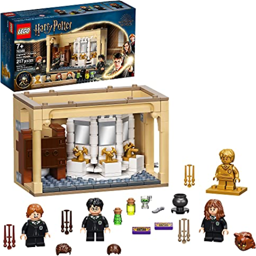

Books
Movies
Albums
Videogames
Games
BD
BD Camille
Blu-ray
Business
Camille
Comics
Cooking
Lego
Manga
Pauline
Photography
Sport
Star Wars
T'choupi
Travel
TV Shows
Un livre dont vous êtes le héro
Vinyl
Walt Disney
1
2
3
4
LEGO Harry Potter - 40452 - Les dortoirs de Gryffondor à Poudlard
LEGO
LEGO Harry Potter - 75966 - La Salle sur Demande de Poudlard
LEGO
LEGO Harry Potter - 75979 - Hedwig
LEGO
LEGO Harry Potter - 75980 - L'attaque du Terrier des Weasley
LEGO

LEGO Harry Potter - 76386 - Poudlard : l’erreur de la potion Polynectar
LEGO
LEGO Harry Potter - 76394 - Fumseck, le phénix de Dumbledore
LEGO
le loup - qui voyageait dans le temps / qui voulait faire le tour du monde
orianne lallemand, éléonore thuillier
1
2
3
4


 Made with Delicious Library Made with Delicious Library
Made with Delicious Library Made with Delicious Library